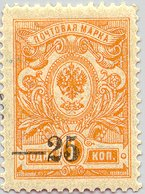
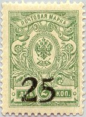
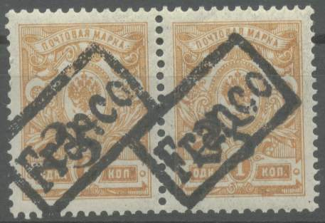
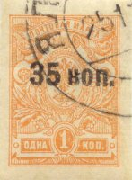
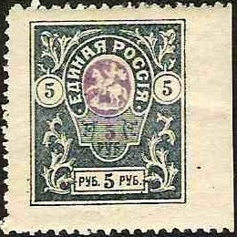
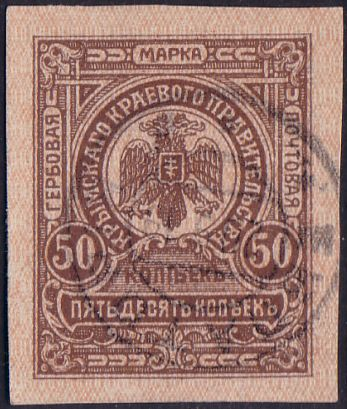

Return To Catalogue - Russia overview - Other stamps of Russia with various overprints
Note: on my website many of the
pictures can not be seen! They are of course present in the
catalogue;
contact me if you want to purchase the catalogue.


'-25' on 1 k yellow (perforated or imperforate) '-50' on 2 k green (perforated or imperforate) '-70 k' on 5 k lilac (perforated or imperforate) '1 p.' on 3 k red (perforated or imperforate) '-1 p.' on 3 k red (perforated or imperforate) '3 pybnR' on 4 k red '10 pybnen' on 4 k red
Value of the stamps |
|||
vc = very common c = common * = not so common ** = uncommon |
*** = very uncommon R = rare RR = very rare RRR = extremely rare |
||
| Value | Unused | Used | Remarks |
| Imperforate | |||
| 25 on 1 k | c | * | |
| 50 on 2 k | c | c | |
| 70 on 5 k | * | * | |
| 1 p on 3 k | * | * | Two types of overprint |
| Perforated | |||
| 25 on 1 k | c | c | |
| 50 on 2 k | *** | *** | |
| 70 on 5 k | * | * | |
| 1 p on 3 k | * | * | Two types of overprint |
| 3 p on 4 k | *** | *** | |
| 10 p on 4 k | ** | ** | |

10 R on 1 k red on yellow 10 R on 5 k green 10 R on 10 k brown on yellow
Value of the stamps |
|||
vc = very common c = common * = not so common ** = uncommon |
*** = very uncommon R = rare RR = very rare RRR = extremely rare |
||
| Value | Unused | Used | Remarks |
| 10 R on 1 k | *** | *** | |
| 10 R on 5 k | *** | *** | |
| 10 Ron 10 k | RR | RR | |
'70 KOP' on 1 k (imperforate) '70 KOP' on 1 k (perforated) '10 py6peN' on 15 k (imperforate) '10 py6peN' on 15 k (perforated) '25 py6peN' on 3 k (imperforate) '25 py6peN' on 3 k (perforated) '25 py6peN' on 7 k (perforated) '25 py6peN' on 14 k (perforated) '25 py6peN' on 25 k (perforated)
Value of the stamps |
|||
vc = very common c = common * = not so common ** = uncommon |
*** = very uncommon R = rare RR = very rare RRR = extremely rare |
||
| Value | Unused | Used | Remarks |
| Imperforate | |||
| 70 k on 1 k | c | * | |
| 10 R on 15 k | * | * | |
| 25 R on 3 k | ** | ** | |
| Perforated | |||
| 70 k on 1 k | * | * | |
| 10 R on 15 k | * | * | |
| 25 R on 3 k | * | * | |
| 25 R on 7 k | R | R | |
| 25 R on 14 k | RR | RR | |
| 25 R on 25 k | R | R | |



(Genuinly used, image obtained from Bill Wagner)

(Genuinely used in Novocherkassk 4yh April 1919, image obtained
from Bill Wagner)
25 on 1 k yellow (perforated or imperforated) 25 on 2 k green (perforated or imperforated) 25 on 3 k red (perforated or imperforated) 25 on 4 k red 50 on 7 k blue
Value of the stamps |
|||
vc = very common c = common * = not so common ** = uncommon |
*** = very uncommon R = rare RR = very rare RRR = extremely rare |
||
| Value | Unused | Used | Remarks |
| Perforated | |||
| 25 on 1 k | * | * | |
| 25 on 2 k | c | c | |
| 25 on 3 k | c | c | |
| 25 on 4 k | c | c | |
| 50 on 7 k | * | * | |
| Imperforate | |||
| 25 on 1 k | c | c | |
| 25 on 2 k | ** | ** | |
| 25 on 3 k | * | * | |
I have seen an inverted overprint of a 25 on 2 k perforated stamp (thanks to Bill Wagner).
Forged overprints exist, the following
information was given to me by Bill Wagner (USA):
I can tell you that the Don Cossack issue can be very difficult
to authenticate. These were surcharged in panes of 25
stamps at a time (the office sheets involved were of 100 stamps,
arranged in 4 panes of 5 X 5) by a local newspaper in
Rostov. Their press was not well suited to the job, and
produced a wide variety of impressions. Provided one has an
intact pane of 25, or a smaller multiple of it which includes
position 19, it becomes easier. There are three varieties
of the "2" figure, and two of the "5."
The "2" variety of position 19 is unique : all other
"2"s have the upper stroke beginning on a diagonal or
slant, but position 25 begins almost vertically (at close to
a 90-degree angle to the base).
In the next table, the number of stamps issued is given (thanks to Bill Wagner), the imperforate stamps were issued in October 1918 and the perforated stamps in November of that same year:
| Number of stamps issued (approximate) | |
| Imperforate stamps | |
| 25 k on 1 k | 1400000 |
| 25 k on 2 k | 10000 |
| 25 k on 3 k | 20000 |
| Perforate stamps (14x14 1/2) | |
| 25 k on 1 k | 100000 |
| 25 k on 2 k | 250000 |
| 25 k on 3 k | 150000 |
| 25 k on 4 k | 200000 |
| 50 k on 7 k | 50000 |
A bogus 'Franco' cancel:

(Bogus 'Franco' cancel)
Bill Wagner mentions about postmarks:
As you will notice, the postmark (although, as often during
the Civil War era, not well-struck) is in the Cyrillic
alphabet used in all Russian postal markings (except those
specifically made for mail going abroad, which had to be marked
in French, by Universal Postal Union rules)(although even
then the stamps themselves were postmarked in Russian). Nothing
like the fantasy "Franco" markings (Spanish perhaps ?)
is ever found on Russian stamps unless they escaped being
cancelled by oversight on mail going abroad. But since
letters to addresses outside of Russia from Don Army Oblast
(Province) from midsummer of 1918 and later are unknown (except
those of German soldiers going by military post up until November
of 1918), there is no possibility of this being the case.
Foreign mail to, from and via the Bolshevist-controlled North
continued without interruption throughout the Revolution and
Civil War, but when the Don Cossacks drove the Reds out of Don
Army Oblast in the summer of 1918, postal communications with the
north stopped, and there was no alternative route out to other
countries throughout the war. (These were issued in October
& November of 1918).

'35 KOP' on 1 k yellow
There is a nice website concerning this issue on: http://www.firstissues.org/ficc/details/south_russia_sulkevich_1.shtml (made by Bill Wagner).
Value of the stamps |
|||
vc = very common c = common * = not so common ** = uncommon |
*** = very uncommon R = rare RR = very rare RRR = extremely rare |
||
| Value | Unused | Used | Remarks |
| 35 k on 1 k | c | c | |

(Genuinly used stamps, images obtained from Bill Wagner)
5 R on 5 k lilac (perforated or imperforated) 5 R on 20 k blue and red
14000 of these surcharges for each of these stamps were made. A similar overprint was made on the Denikin (South Russia) issue (35 k blue).
Value of the stamps |
|||
vc = very common c = common * = not so common ** = uncommon |
*** = very uncommon R = rare RR = very rare RRR = extremely rare |
||
| Value | Unused | Used | Remarks |
| 5 R on 5 k | c | c | |
| 5 R on 20 k | * | * | |
(Reduced size)
100 R on 1 k yellow (perforated or imperforated)
Value of the stamps |
|||
vc = very common c = common * = not so common ** = uncommon |
*** = very uncommon R = rare RR = very rare RRR = extremely rare |
||
| Value | Unused | Used | Remarks |
| 100 R on 1 k | ** | - | |
The 100 R stamp was prepared, but never issued. The following
information was obtained from Bill Wagner (USA):
The Crimean 100 roubles surcharges were prepared for use, but
never issued. "Used" copies of them were
subsequently manufactured in Paris by a former postal official,
using cancellors which he carried away with him in the
evacuation. His downfall, however, was that these are
postmarked with dates previous to the supposed "issue
date." If you want an illustration of these, you can
find a multiple of them at
http://hometown.aol.com/byckoff1/SRUSSIA.html Note
that there are different settings ! The "1" of
"100" can be above the "B" or the
"L" of "Rublei" below it. This is
because the typographic plate was originally set up to print
double-figure surcharges, being modified at the last minute to
print three-figure surcharges.
(Reduced size)
20 k green
This stamp mainly seems to have been used as paper money.
Value of the stamps |
|||
vc = very common c = common * = not so common ** = uncommon |
*** = very uncommon R = rare RR = very rare RRR = extremely rare |
||
| Value | Unused | Used | Remarks |
| 20 k | *** | ? | |

(Reduced sizes)
Small size (imperforated) 5 k orange 10 k green 15 k red 35 k blue 70 k black Larger size (imperforated or perforated) 1 R brown and red 2 R violet and yellow 3 R red and green 5 R blue and lilac 7 R green and red 10 R red and green Surcharged
5 R on 35 k blue
26000 of these surcharges were made.
Value of the stamps |
|||
vc = very common c = common * = not so common ** = uncommon |
*** = very uncommon R = rare RR = very rare RRR = extremely rare |
||
| Value | Unused | Used | Remarks |
| 5 k | vc | c | |
| 10 k | vc | vc | |
| 15 k | vc | c | |
| 35 k | vc | c | |
| 70 k | c | c | |
| 1 R | * | * | |
| 2 R | * | * | |
| 3 R | * | * | |
| 5 R | * | * | |
| 7 R | * | * | |
| 10 R | * | * | |
| 5 R on 35 k | ** | ** | |
The large sized stamps seem to have been forged; they have rosettes instead of numerals in the circles at both sides (sorry, no picture available).
(certified genuine)
(Reduced size)
'35 k.' on 10 sh brown '70 k.' on 50 sh red
The above images were obtained thanks to Bill Wagner; according to him these are the position 3 and 4 of the 35 k on 10 sh printing. These stamps were issued after the departure of the German troops. These provisional surcharges were made because there was a shortage of 35 k and 70 k stamps for letters and registered letters.
Value of the stamps |
|||
vc = very common c = common * = not so common ** = uncommon |
*** = very uncommon R = rare RR = very rare RRR = extremely rare |
||
| Value | Unused | Used | Remarks |
| 35 k on 10 s | ** | ** | |
| 70 k on 50 s | *** | *** | |
The next stamp was merely used as a replacement of a coin, but was also valid for postal purposes. Inscription: 'KPbIMCHAGO KPAEBOGO PPABHTEDbCTBH':

(Front and backside of this stamp)
Value of the stamps |
|||
vc = very common c = common * = not so common ** = uncommon |
*** = very uncommon R = rare RR = very rare RRR = extremely rare |
||
| Value | Unused | Used | Remarks |
| 50 k | *** | ? | |
{kind=link}
{kind=link}
{kind=link}